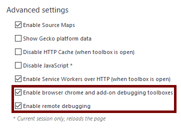

{{draft}}
{{ToolsSidebar}}
This guide explains how you can use the Firefox Developer Tools to debug a different instance of desktop Firefox running on the same machine. In this guide, the instance of Firefox being debugged is called the debuggee, and the instance of Firefox doing the debugging is called the debugger.
First, you'll need to ensure that both debugger and debuggee have the "Enable browser chrome and add-on debugging toolboxes" and "Enable remote debugging" settings checked in the Developer Tools Settings. If you're using Firefox Developer Edition, they are checked by default.

You only need to do this once: the setting values persist across restarts.
Next, you need to start the debugger server in the debuggee.
Run the debuggee from the command line, passing it the --start-debugger-server option:
/path/to/firefox --start-debugger-server
Passed with no arguments, --start-debugger-server makes the debugger server listen on port 6000. To use a different port, pass the desired port number:
/path/to/firefox --start-debugger-server 1234
Note: in Windows, the start-debugger-server call will only have one dash:
firefox.exe -start-debugger-server 1234
Note: By default, and for security reasons, the devtools.debugger.force-local option is set. If you want to debug a Firefox instance from an external machine, you can change this option, but only do this on a trusted network or set a strong firewall rule to lock down which machines can access it.